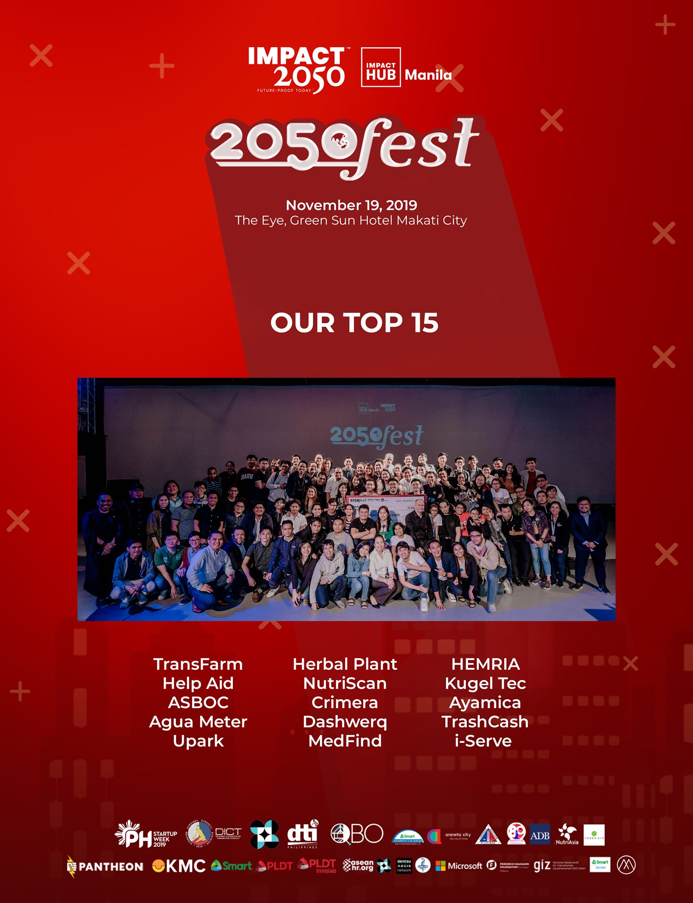
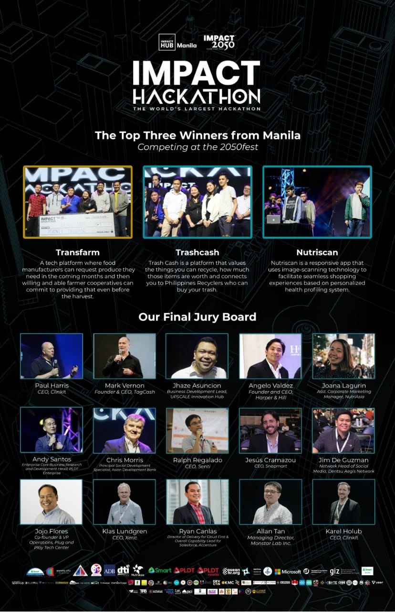
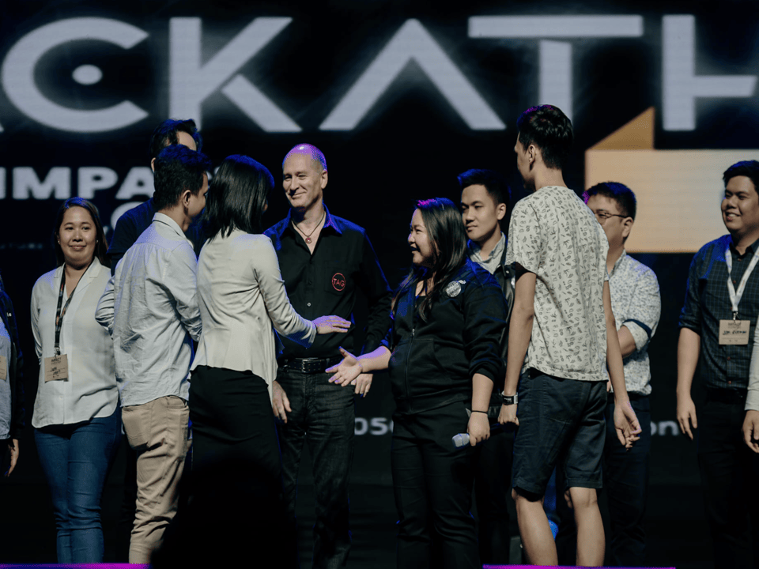

Hello, I’m Claire from Trash Cash PH, and I’m beyond excited to share our unforgettable journey at the largest hackathon at Impact Hub Manila! It’s been an incredible rollercoaster of creativity, hard work, and collaboration—and I’m thrilled to tell you all about it, from making it into the Top 15 to ultimately earning the title of 1st Runner-Up.
This journey wasn’t just about competition; it was about discovering the power of collective innovation and turning our passion for sustainability into a real-world solution. Here’s how we went from Top 15 to Top 3, and then to 1st Runner-Up, at one of the most impactful hackathons in the country.
What is a Hackathon?
Before diving into our story, let’s first talk about what a hackathon is for those who may not be familiar with the concept. A hackathon is an event where people from all backgrounds—whether tech developers, entrepreneurs, designers, or problem-solvers—come together to create innovative solutions in a limited amount of time, usually 24 to 48 hours.
The goal is to collaborate, prototype, and build something meaningful that addresses a specific challenge, whether that’s in tech, social good, or sustainability. It’s intense, collaborative, and immensely rewarding, especially when the focus is on creating social impact.
The Hackathon at Impact Hub Manila: A Platform for Social Good
The hackathon we participated in at Impact Hub Manila wasn’t just another coding competition—it was a space designed for social innovation. The event brought together changemakers, entrepreneurs, and innovators all driven by a shared mission to use technology and creativity to address some of the biggest challenges facing our communities today.
This year’s hackathon focused on finding solutions to social and environmental problems. With themes like climate change, waste management, and sustainable livelihoods, it was the perfect platform for us at Trash Cash PH—an initiative that transforms waste into value by incentivizing responsible waste disposal through a digital platform.
Our Journey: From Top 15 to Top 3 to 1st Runner-Up

When we first applied to the hackathon, we were eager but uncertain. As a small startup focused on waste management, we knew that our platform had potential, but we hadn’t anticipated how much this event would challenge us to refine and push our idea to new heights.
Step 1: From 80 to Top 15
After the initial round of applications, we were thrilled to make it to the Top 15 teams. The competition was fierce, with teams working on everything from renewable energy solutions to community-based education platforms. Our team, however, was laser-focused on waste management and exploring new ways to incentivize recycling through technology.
During the first phase of the hackathon, we worked hard to refine our pitch, improve our prototype, and ensure that our idea was as impactful and scalable as possible. The support and feedback we received from mentors and other participants were invaluable in helping us shape our solution. We knew that we had something special, but we also understood that we had a lot of work ahead of us.
Step 2: From Top 15 to Top 3
As the hackathon progressed, our team was selected as one of the Top 3 finalists, which was both a huge honor and a massive moment of validation for us. We were up against some truly remarkable teams, each tackling critical issues with fresh, innovative approaches. But the deeper we went into the competition, the more we realized that our project wasn’t just about waste—it was about creating a culture of sustainability through technology.
To make it to the Top 3, we had to pivot, refine, and test our ideas rapidly. We sought to integrate blockchain technology into our app for more transparent waste tracking and reward distribution. We also worked hard to align our platform with local communities, ensuring that it wasn’t just a tech solution but one that could be embraced by everyone—from local governments to everyday citizens.
Being in the Top 3 felt like a victory in itself, but we weren’t ready to stop there. Our goal was to win, and we were determined to push our idea even further.
Step 3: From Top 3 to 1st Runner-Up

The final pitch was intense. We had just a few minutes to convince a panel of judges—composed of social impact experts, entrepreneurs, and investors—that our idea was not only viable but had the power to change the way communities manage waste.
We shared our vision of a sustainable, circular economy where people were not just incentivized to recycle, but actively engaged in reshaping the future of waste management. Our pitch emphasized the importance of technology in promoting responsible waste disposal, and how our platform could make recycling both accessible and rewarding for everyone.

In the end, we earned 1st Runner-Up, and while we didn’t take home the top prize, we were overjoyed. The recognition was a testament to how far we had come—from a small idea to a project that could potentially make a huge impact in addressing the Philippines' waste crisis.
What We Learned From the Hackathon
Participating in this hackathon was an experience that taught us so much about ourselves, our project, and the power of collaboration. Here are a few key takeaways:
- Innovation Requires Collaboration: We couldn’t have gotten this far without the support of our incredible mentors, team members, and the larger hackathon community. The diversity of perspectives and skill sets we encountered was invaluable in helping us refine our ideas and approach.
- Iterate and Pivot: The hackathon forced us to test, learn, and adapt quickly. We realized that flexibility and adaptability are essential in building a solution that can scale and make an impact.
- Purpose Drives Innovation: Our passion for sustainability was at the heart of our journey. Every decision, every pivot, was driven by our desire to create a positive change. The hackathon gave us the platform to bring that purpose to life, and we saw how much people resonated with our mission.
- Celebrate Progress: Although we didn’t take home the top prize, making it to 1st Runner-Up was a huge milestone for us. It’s a reminder that every step forward is progress, and that the journey is just as important as the destination.
Moving Forward: The Road to Change
While our journey at Impact Hub Manila’s Hackathon may have ended with us as 1st Runner-Up, this is only the beginning. The lessons we learned and the connections we made have fueled our passion for Trash Cash PH even more. We are more determined than ever to continue building our platform, pushing the boundaries of what’s possible in waste management, and driving social and environmental impact.
We’re incredibly grateful for this experience and the opportunity to contribute to a more sustainable future. And if there’s one thing this hackathon has shown us, it’s that with collaboration, innovation, and purpose, anything is possible.
Thank you to everyone who supported us on this journey—let’s keep pushing for a cleaner, greener, and more sustainable future, together.
---
If you’re inspired by this journey and want to learn more about the event, check out the Impact Hub Manila Facebook page. Let’s continue innovating and creating positive change for our communities and the planet!